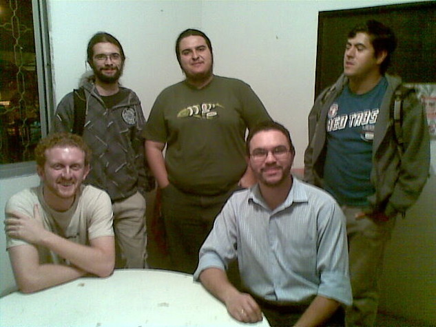

VII Semana de Computação da UNICAMP
Quer fazer mas não tem espaço?
Vá a um Hackerspace!
Renne Rocha
EE00 - UNICAMP
Senior Python Developer - Scrapinghub
Um dos fundadores do LHC
HackerSpace
=
Hacker + Space
Space
Hacker
Hackerspace
Hackerspace
- Mantido pela comunidade
- Interesses compartilhados
- Troca de experiências
- Espaço para experimentação
Onde começou?
1995 - C-Base (Alemanha)
2006 - Metalab (Áustria)
2007 - NYC Resistor (EUA)

2008 - Noisebridge (EUA)
E no Brasil?
2010 - Garoa Hacker Clube
Laboratório Hacker de Campinas
- SJC HackerClube (São José dos Campos)
- LabLivre (São Paulo)
- MateHackers (Porto Alegre)
- Garagem Hacker (Curitiba)
- Raul Hacker Clube (Salvador)
- Calango Hacker Clube (Brasília)
- ...
- Início das discussões no começo de 2011
- Reuniões na UNICAMP
- Criar uma comunidade em torno do espaço
Organização
- Mantido com doações dos frequentadores
- Acesso 24x7 para associados
- Qualquer pessoa pode utilizar o espaço
- Maioria das atividades gratuitas
Inauguração 12/10/2011
Nova sede 25/01/2014
TOUR
Oficina de IoT
NodeLHC
Tosconf
Tosconf
Tosconf
Jogatina
GruPy
PyLadies
LHC Kids
Visite-no
Open Hackerspace (quinta-feira a noite)
Facebook/Twitter/Telegram/Wiki/E-mail
http://lhc.net.br/
http://twitter.com/lhc_campinas
https://www.facebook.com/LabHackerCampinas/